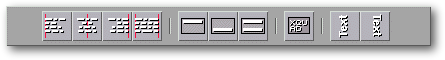
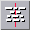
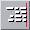
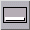
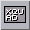

<!-- Documentation XQuad (c)1995-2000 AXENE contact axene@axene.org>
<html>

<head>
<title>Barre horizontale d'icônes &quot;Textes&quot;</title>
</head>

<body BGCOLOR="#FFFFFF" BACKGROUND="Images/back.gif" TEXT="#000000">

<p ALIGN="right">  </p>

<p><br>
<br>
La barre d'icônes 'Manipulation des textes' permet de choisir l'alignement horizontal et
vertical, de contrôler le mode multi-lignes et de choisir le sens d'écriture. Le mode
d'alignement par défaut est&nbsp;: 

<ul>
  <li>aligné à gauche pour les textes </li>
  <li>aligné à droite pour les nombres (valeurs numériques, dates, heures...) </li>
  <li>centré pour les valeurs booléennes. </li>
</ul>

<p>Seuls les textes peuvent dépasser dans les cellules adjacentes (suivant l'alignement
horizontal et le sens d'écriture) si la largeur de la colonne n'est pas suffisante et si
les cases adjacentes sont vides. </p>

<p>Dans le sens d'écriture vertical, tous les modes d'alignement restent possibles mais
ont des effets inversés&nbsp;: les alignements horizontaux agissent en vertical et
inversement. <br>
<br>
</p>

<hr>

<p align="center"><br>
 <br>
<small><i>Photo d'écran&nbsp;: Barre d'icônes Textes. </i></small></p>

<p><br>
</p>

<hr>

<p><br>
</p>

<h3>Première section de la barre d'icônes&nbsp;:</h3>

<ul>
  <li> <a NAME="left_icon">le premier bouton icône permet d'<b>aligner
    à gauche</b> le contenu des cellules sélectionnées. Ce bouton est enfoncé lorsque la
    cellule active est déjà en mode aligné à gauche. Cliquer sur ce bouton quand il est
    enfoncé passe les cellules sélectionnées en mode alignement par défaut. Dans ce mode
    d'alignement, les textes peuvent dépasser vers la droite. </a><br>
    &nbsp;</li>
  <li> <a NAME="center_icon">le deuxième bouton icône
    permet de <b>centrer horizontalement</b> des cellules sélectionnées. Ce bouton est
    enfoncé lorsque la cellule active est déjà en mode centré. Cliquer sur ce bouton quand
    il est enfoncé passe les cellules sélectionnées en mode alignement par défaut. Dans ce
    mode d'alignement, les textes peuvent dépasser vers la gauche et vers la droite. </a><br>
    &nbsp;</li>
  <li> <a NAME="right_icon">le troisième bouton icône
    permet d'<b>aligner à droite</b> le contenu des cellules sélectionnées. Ce bouton est
    enfoncé lorsque la cellule active est déjà en mode aligné à droite. Cliquer sur ce
    bouton quand il est enfoncé passe les cellules sélectionnées en mode alignement par
    défaut. Dans ce mode d'alignement, les textes peuvent dépasser vers la gauche. </a><br>
    &nbsp;</li>
  <li> <a NAME="justify_icon">le dernier bouton icône
    permet de <b>justifier horizontalement</b> (aligner à gauche et à droite) le contenu des
    cellules sélectionnées. Ce bouton est enfoncé lorsque la cellule active est déjà en
    mode justifié. Cliquer sur ce bouton quand il est enfoncé passe les cellules
    sélectionnées en mode alignement par défaut. </a></li>
</ul>

<p><br>
</p>

<h3>Seconde section de la barre d'icônes&nbsp;:</h3>

<ul>
  <li> <a NAME="top_icon">le premier bouton icône permet d'<b>aligner
    en haut</b> le contenu des cellules sélectionnées. Ce bouton est enfoncé lorsque la
    cellule active est déjà en mode 'aligné avec le haut de la cellule'. Cliquer sur ce
    bouton quand il est enfoncé passe les cellules sélectionnées en mode 'alignement
    vertical centré'. </a><br>
    &nbsp;</li>
  <li> <a NAME="bottom_icon">le deuxième bouton icône
    permet d'<b>aligner en bas</b> le contenu des cellules sélectionnées. Ce bouton est
    enfoncé lorsque la cellule active est déjà en mode 'aligné avec le bas de la cellule'.
    Cliquer sur ce bouton quand il est enfoncé passe les cellules sélectionnées en mode
    'alignement vertical centré'. </a><br>
    &nbsp;</li>
  <li> <a NAME="vjustify_icon">le dernier bouton icône
    permet de <b>justifier verticalement</b> (aligner en haut et en bas) le contenu des
    cellules sélectionnées. Ce bouton n'a d'effet visible que pour les cellules en </a><a HREF="HBar_Text.html#multiline_icon">mode multi-lignes</a>. Il est enfoncé lorsque la
    cellule active est déjà en mode 'justifié verticalement'. Cliquer sur ce bouton quand
    il est enfoncé passe les cellules sélectionnées en mode 'alignement vertical centré'.
    La justification verticale en mode multi-lignes permet de répartir l'espace vertical (la
    hauteur de la cellule) entre les différentes lignes de texte. </li>
</ul>

<p><br>
</p>

<h3>Troisième section de la barre d'icônes&nbsp;: </h3>

<ul>
  <li> <a NAME="multiline_icon">le bouton icône permet
    de <b>passer en mode multi-lignes</b> les cellules sélectionnées. Le mode multi-lignes
    ne s'applique qu'aux cellules contenant du texte. Au lieu d'afficher le texte sur une
    ligne en le faisant dépasser dans les cellules adjacentes (si possible), le texte sera
    affiché exclusivement à l'intérieur de sa cellule sur plusieurs lignes. Ce bouton est
    enfoncé lorsque la cellule active est déjà en mode multi-lignes. Cliquer sur ce bouton
    quand il est enfoncé passe les cellules sélectionnées en mode simple ligne. </a></li>
</ul>

<p><br>
</p>

<h3>Dernière section de la barre d'icônes&nbsp;: </h3>

<ul>
  <li> <a NAME="down2up_icon">le premier bouton icône
    permet d'<b>afficher suivant un angle de -90°</b> le contenu des cellules
    sélectionnées. Ce bouton est enfoncé lorsque la cellule active est déjà en mode
    écriture à -90°. Cliquer sur ce bouton quand il est enfoncé passe les cellules
    sélectionnées en mode 'écriture horizontale'. </a><br>
    &nbsp;</li>
  <li> <a NAME="up2down_icon">le second bouton icône permet
    d'<b>afficher suivant un angle de +90°</b> le contenu des cellules sélectionnées. Ce
    bouton est enfoncé lorsque la cellule active est déjà en mode écriture à +90°.
    Cliquer sur ce bouton quand il est enfoncé passe les cellules sélectionnées en mode
    'écriture horizontale'. </a></li>
</ul>

<p><br>
</p>

<hr>

<p ALIGN="right"></p>
</body>
</html>
